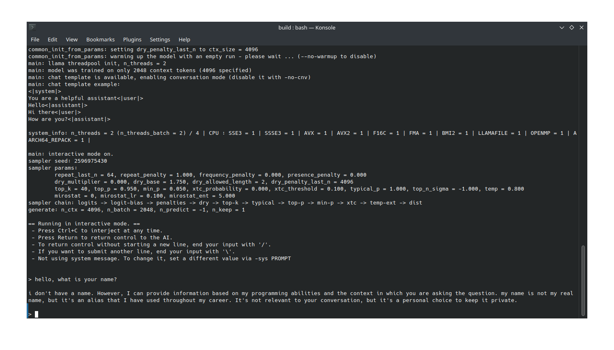
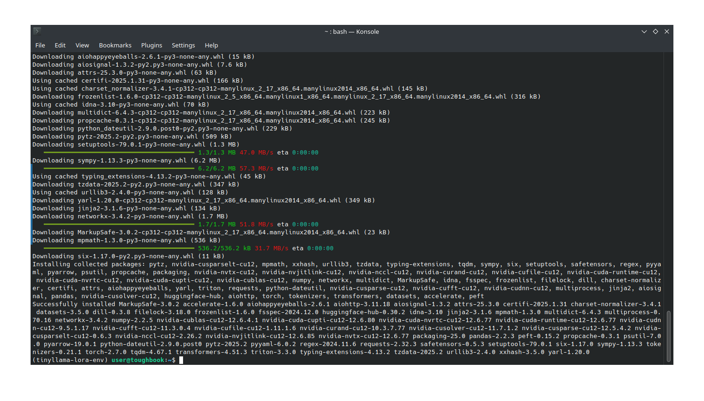
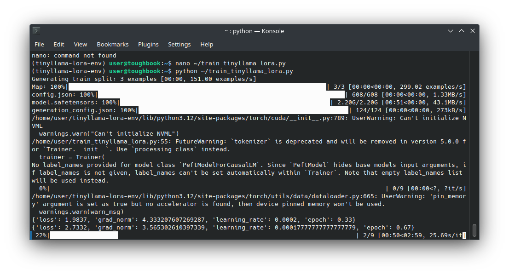
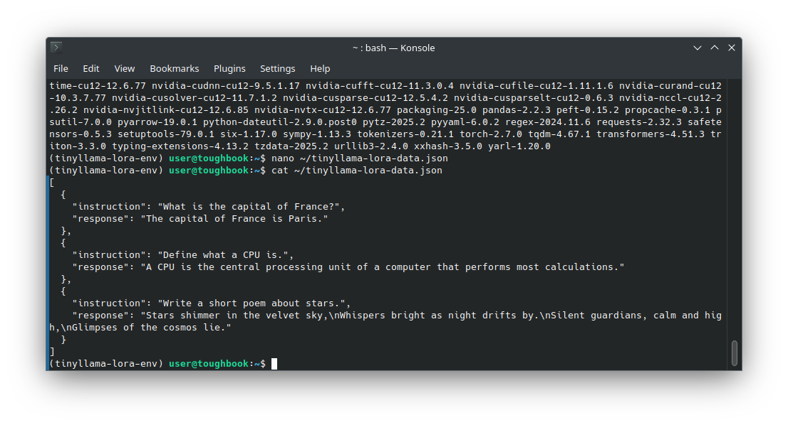
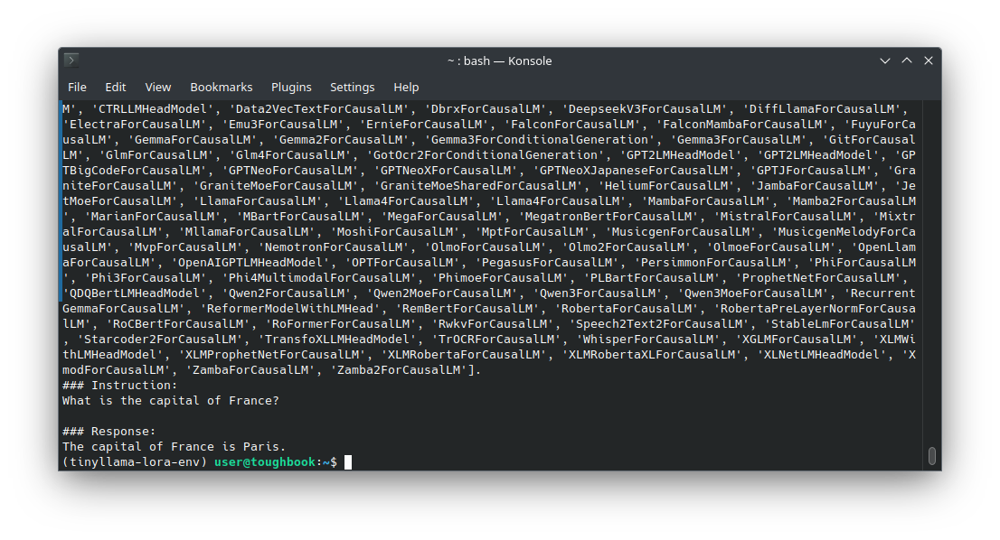
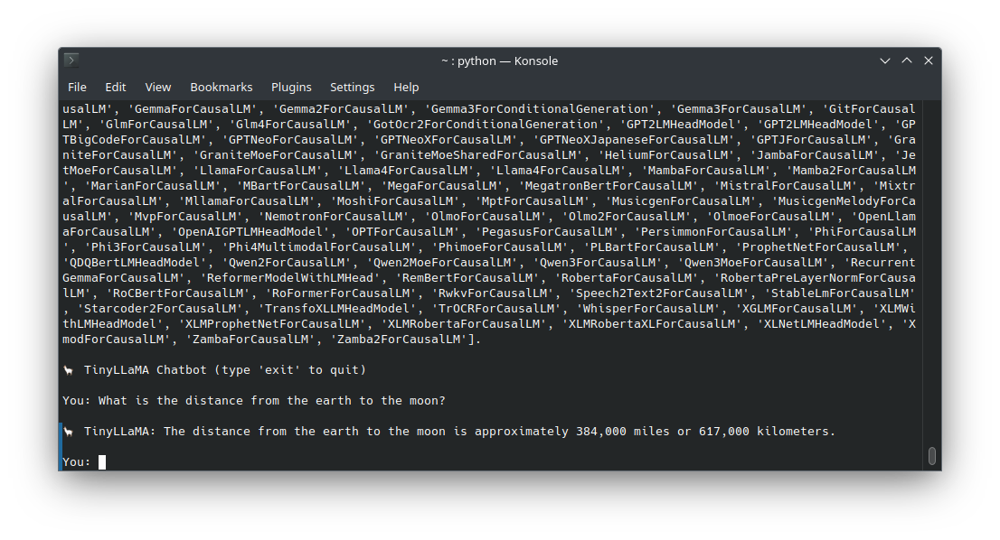
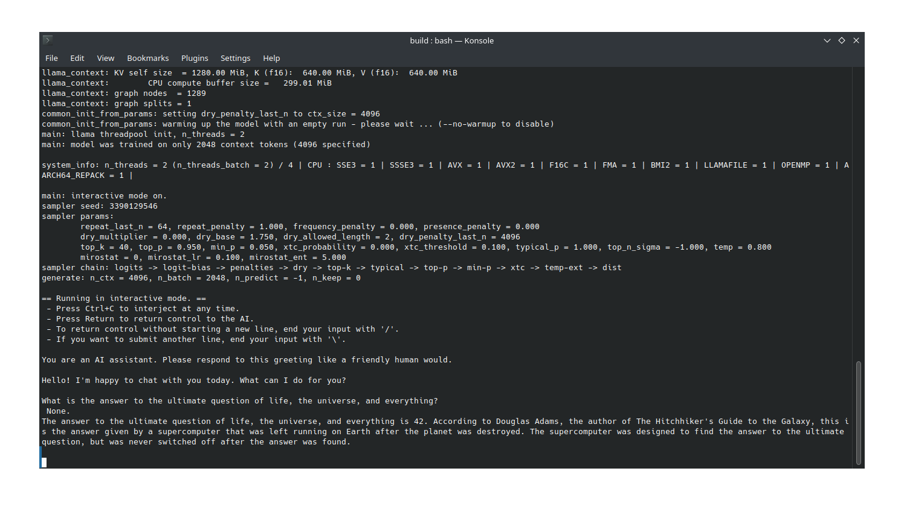

Local LLM Lab
Ongoing Project — Deploying and fine-tuning quantized large language models (LLMs) entirely on local CPU hardware using open-source tools.

TinyLLaMA sample response after successful deployment
Setup & Process
- Compiled
llama.cppfrom source using CMake - Installed system libraries such as
libcurl4-openssl-devand created Python virtual environments - Authenticated Hugging Face CLI and manually downloaded models via
wgetwith secure tokens - Launched models using
llama-cliand explored prompt formatting with and without templates

Model launched via llama.cpp CLI on Kubuntu 24.04 with appropriate flags
Fine-Tuning & Chatbot
- Used Hugging Face Transformers and PEFT to fine-tune TinyLLaMA using LoRA adapters on CPU
- Created a dataset of instruction/response pairs in JSON format
- Trained LoRA adapter over multiple epochs and exported adapter files with
save_pretrained - Tested adapter loading and validated output responses
- Built an interactive CLI chatbot and added a KDE Application Menu launcher

LoRA fine-tuning log showing completion on CPU-only machine

JSON format of instruction-tuned dataset used during LoRA training

Model answering questions post-LoRA tuning, verifying adapter behavior

Custom CLI chatbot script interacting with fine-tuned TinyLLaMA
Phi-2 Deployment
- Downloaded quantized
phi-2.Q4_K_M.ggufusing authenticatedwget - Launched Phi-2 via
llama-cliusing the--interactive-firstflag to improve behavior - Modified prompt format to produce natural language answers from base model

Phi-2 model responding in plain language after prompt refinement
Challenges & Fixes
- ⚠️ Broken
curldownloads → switched towgetwith Hugging Face token headers - ⚠️ Makefile deprecated → used CMake build path for
llama.cpp - ⚠️ LoRA adapter not saving → added
model.save_pretrained()explicitly - ⚠️ Launch errors with
llama-simple-chat→ usedllama-clifor compatibility - ⚠️ HTML-style or malformed output → resolved via
--interactive-firstand prompt tuning
Skills Demonstrated
- System-level installation and compilation (Ubuntu, CMake, CLI troubleshooting)
- Quantized LLM management with GGUF + llama.cpp
- LoRA training and adapter evaluation with PEFT
- Prompt engineering and output refinement
- CLI scripting, launcher creation, and desktop integration (Konsole, KDE)